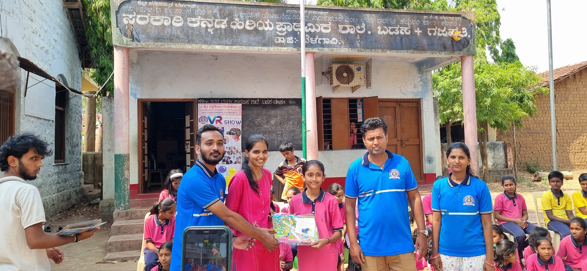

Turning individuals into active contributors, changemakers, and leaders who multiply impact.
Impact Catalyst transforms passionate individuals into action-oriented leaders through structured volunteering and leadership opportunities.
By building confidence, ownership, communication, and service mindset, we create a network of changemakers who expand impact across schools, colleges, and communities.

Practical programs designed to build contributors, ambassadors, and future leaders.
Prepare volunteers with communication, responsibility, and execution skills.
Develop confident young leaders who can guide teams and initiatives.
Create student ambassadors who inspire peers and spread positive action.
Establish active student communities inside schools and colleges.
Identify and empower local changemakers who can solve real community problems and create sustainable impact.
Volunteer, lead, collaborate, and help build stronger students and communities.
Join Now